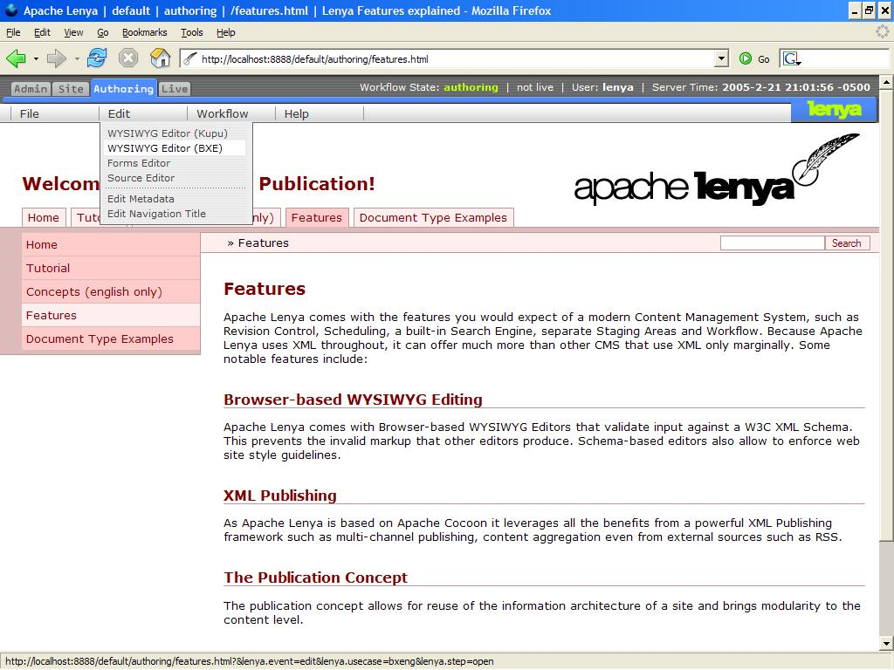
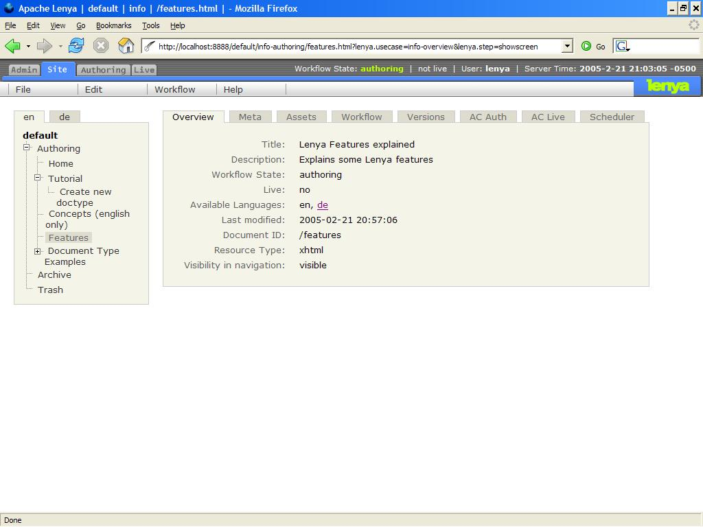
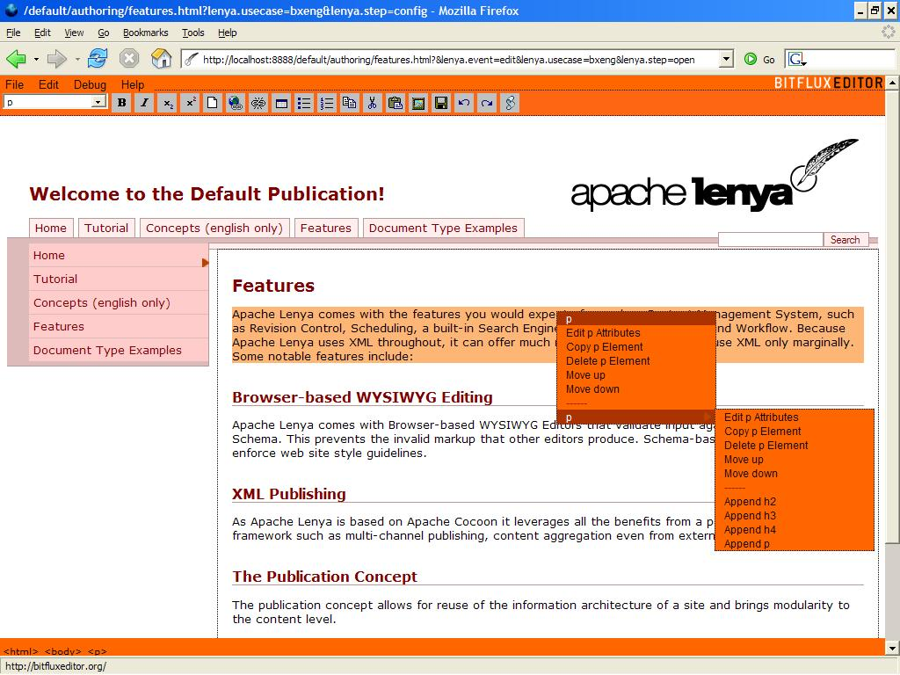

Apache Lenya Screenshots
The following screenshots are meant for the evaluator in a hurry. For a much more complete impression of Apache Lenya, download the latest release and try it out yourself.
-
The Apache Lenya authoring area is used to edit individual pages. The author browses through the authoring
area just like a visitor to the web site would, by using the navigation of the site. The menu at the top of
the screen is the only indication that you are inside the authoring environment, everything else is just
like it appears on the live site.

-
The Apache Lenya site area is used to perform operations that concern multiple pages, like moving pages
around, renaming sections of the site, etc. The site area gives a quick overview of the complete site.
Detailed information about each page can be accessed by clicking on the relevant node in the tree
structure at left.

-
Apache Lenya comes with different editors for content editing. One of the more advanced ones is BXE.
Using BXE, you can edit arbitrary XML in WYSIWYG and validate your document against an Relax NG
schema while it is being edited.
BXE uses validation to restrict the editing choices instead of allowing free-form input and then
generating validation errors on save (an approach that makes it different from most other editors).

by Lenya community